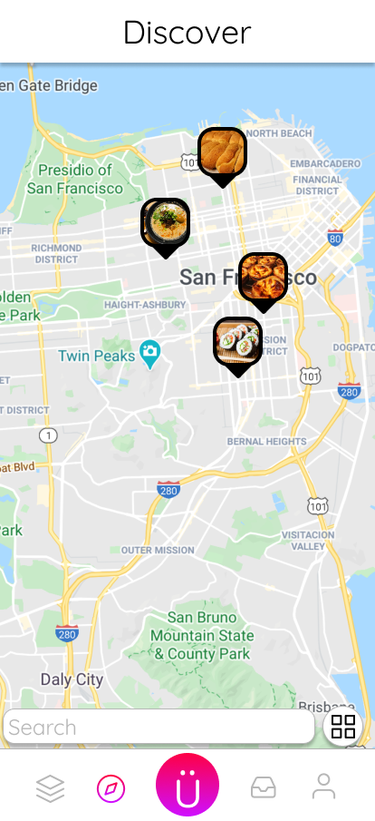

Name and Logo Creation

(Last Updated: 6/10/20)
füdy was first conceptualized to solve a personal user pain point. I wanted a better way to organize the food posts on my Instagram feed, recipes from various online sources, and restaurants that I wanted to visit from my yelp/google maps bookmarks. Instead of having all these food related subjects across multiple outlets, I wanted an all-in-one solution that anyone can pick up and use with ease. I felt that Instagram’s way of displaying food posts could be improved upon. Currently, food posts are mixed with the other posts the users followed. When a user would like to share a recipe that ties in with a food post, they would have to use a 3rd party website they would include on their profile and link the Instagram post to the correct recipe page. The problem with this is that it’s extra steps for a simple task. Also, not everyone is familiar with using 3rd party websites in order to link a post to an external web page. I also wanted to better track the restaurants I’ve been to that I tagged with the food I took a pic of as well as my friends. This way, I can view where they have been, what they ate, and this could lead to a discussion about food. It would be nice to also display this information in a timeline/calendar to see an overview of the places you’ve been with time. The problem I had with yelp is that it relies heavily on reviews especially for small businesses. The Yelp's "Elite Member" also creates a bias in favor of users with this status. I want füdy to focus less on metrics that would create a bias for users to gravitate towards a specific post, recipe, or restaurant. Saving and sharing recipes are also a must for foodies who love to cook. Having an app that not only saves recipes, but can also add recipes seamlessly from other sources can be beneficial compared to what’s already out there. Having to automate the process instead of manually inputting each step to the recipe. I want this feature to be accessible to those who are not tech savvy the most. My goal is to create an app that not only I would use, but others would too. Our love for food is a great way to bond with others and understand our unique cultures.
After identifying my own user pain point's with the current situation of food in social networking apps, I created a Google Form surveying anonymous people asking about their behaviours and habits with food and the internet. Questions asked about how people used the internet for food, following food related accounts on social media and various outlets, how they find recipes, and how they currently track recipes they save. Here are the results after surveying 113 respondants:
After reviewing the results, we can see that a lot of respondants use the internet to learn how to cook or to look for reviews of a particular restuarant. Respondants also wanted a more streamlined experience of tracking recipes or for those who do not cook at home often, this would encourage them to cook more. For those who cooked at home often, they wanted to be able to share recipes to others easier.
With the information gathered from my survey, I was able to determine if their was an audience for the an app that started from my own personal user pain point with the current offers and figure out what other needs people wanted addressed.
The word "foodie" is a popular name to describe a person that has an interest in food. With that keyword as a focus point for the phrase, "A Social Network for Foodies", I wanted to use a name that would not only be easy to identify with food, but also envokes fun and enjoyment, a feeling that people experience with the love of food. It was not long for me to re-arrange this word with these characteristics in mind. Knowing that the German letter of "Ü" makes an English "oo" sound, I decided to use it because I can see a smiley face with "Ü" when used with a sans-serif font. I found that "Quicksand" was perfect in making this "Ü" look like a smiley face with its roundedness and circular umlaut mark as eyes. Replaceing the "ie" to "y" similar to the word "dy" found in "buddy" shortens the word playfully.
When braindstorming an iconic logo, I thought about what is a central item that is associated with food. Food is served on a plate or dish. I created a simplified dish that would "serve" fudy to users. The smiley face "Ü" represents the happiness and enjoyment I want füdy's users to experience when using this app which makes it a key part of the name, logo, and overall branding.
With larger screen smartphones being the norm, users often find that navigating one-handed with their thumb is not ideal when elements are towards the top of the display. Some of these commonly used elements other apps place towards the top include the searchbar, back arrow, drop-down menus, and filters. By placing these commonly used elements towards the bottom, users would find that this would increase the ease of use.


{kind=link}
{kind=link}
![Ü Button The Ü or post button when pressed would split into the 3 main post types for users: Image, Recipe, and Video. Image is a simple image of the post similar to posting on Instagram. This is ideal for those who want to quickly and simply share food without the need of a recipe or video such as food vloggers, business owners, and chefs. Recipe is for the home cook who wants to share step-by-step recipes to others. Video is for the user that creates video content for food such as an in-depth tutorial, a recording of a professional working their craft, or that ooey-gooey cheese pull.](images/fudy/PostButton.png){kind=link}
![ Discover Screen Map View The Discover Screen has different ways of discovering content. The map view focuses on "photo pins" of tagged locations to easily identify restuarants and view the type of food they serve. This screen was made to emphasize the idea that I did not want any score rating or metrics that would create a bias from one restaurant over another, but to let the food speak for itself. Now I know This would not stop a user from making a post that is a review, but by removing the ability to view a score easily would remove those from quickly dismissing a business.](images/fudy/Discover.png){kind=link}
{kind=link}